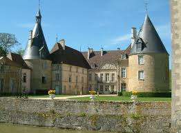
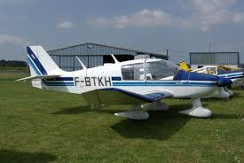

À voir et à faire
La maison et ses environs regorgent de choses à faire et à voir, que vous vouliez vous reposer, vous défouler ou vous amuser !
À faire dans les environs
Venez découvrir les richesses de la Bourgogne
Base nautique de Panthier
À 8 km
Golf et château de Chailly
À 20 minutes
Vignoble de Bourgogne
À moins de 30 minutes
Les Anis de Flavigny
Découvrez la fabrique de ces bonbons typiques, à 40 minutes
Canal de Bourgogne
Seuls ou en visite guidée, découvrez la vie des mariniers d'autrefois
Balades à vélo
Cyclotouristes ? Simple balade le long du canal de Bourgogne ?

Château de Commarin
À 10 minutes
Parc naturel régional du Morvan
À 45 minutes
Alesia
Découvrez l'histoire de France à 40 minutes de la Maison

Aérodrome de Pouilly-Maconge
À moins de 10 minutes, venez découvrir la région avec un tour en avion !
Villes et villages à visiter
Venez découvrir les richesses de la Bourgogne
Dijon
À 42 km
Châteauneuf-en-Auxois
À 7 km, l'un des 157 "Plus Beaux Villages de France"
Beaune
À 30 minutes
Autun
À 45 minutes
Vézelay
À 1h
Saulieu
À 30 minutes